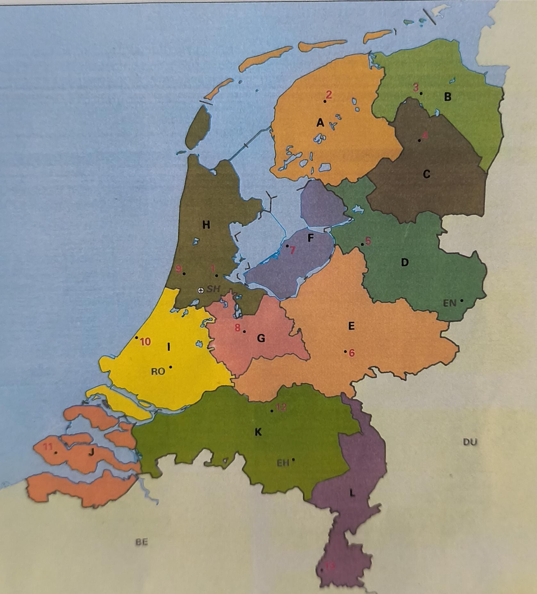

🇳🇱 Eefjes Topografie
Kies een onderdeel:
Provincies & Hoofdsteden
Kaart van Nederland
Grote Steden
Vliegvelden
Grote Rivieren
Wat hoort bij:
Goed:
0
| Fout:
0
Terug naar menu
🗺️ Kaart van Nederland
Welke provincie wordt aangegeven?

Vraag:
1
| Goed:
0
| Fout:
0
Nu steden oefenen
Terug naar menu